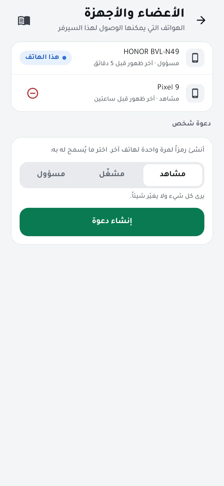
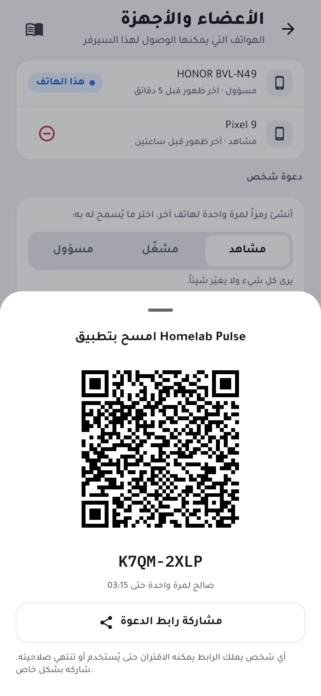

ادعُ شخصاً إلى سيرفرك
امنح هاتفاً آخر الوصول إلى سيرفرك، سواء لأحد أفراد عائلتك أو لجهازك اللوحي، برمز يعمل مرة واحدة، واختر ما يُسمح له به.
الصلاحيات
- مشاهد: يرى كل شيء ولا يغيّر شيئاً.
- مشغّل: يمكنه أيضاً إعادة تشغيل الحاويات والخدمات والإقرار بالتنبيهات.
- مسؤول: تحكّم كامل في الطرفية والطاقة والتكاملات والأعضاء.
-
أنشئ الدعوة
افتح على هاتف بصلاحية مسؤول الإعدادات ← الأعضاء والأجهزة. تحت دعوة شخص اختر الصلاحية واضغط إنشاء دعوة.

-
امسحها بالهاتف الآخر
ثبّت Homelab Pulse على الهاتف الآخر، وافتح إضافة سيرفر ← مسح رمز QR، وامسح الرمز. يعمل الرمز مرة واحدة حتى الوقت المعروض.
لستما في المكان نفسه؟ زر مشاركة رابط الدعوة يرسلها رابطاً، لكن أي شخص يملكه يمكنه الاقتران حتى يُستخدم أو تنتهي صلاحيته، فشاركه بشكل خاص.

-
أدِر الصلاحيات
يظهر الهاتف الجديد في الأعضاء والأجهزة. ولسحب صلاحيته اضغط أيقونة الإزالة بجانبه: يُسجَّل خروجه فوراً، وتنتهي اتصالاته المفتوحة وجلسات الطرفية.
اقرن الهاتف الجديد وهو على شبكة السيرفر نفسها. وكل تغيير يجريه يُسجَّل في سجل التدقيق.